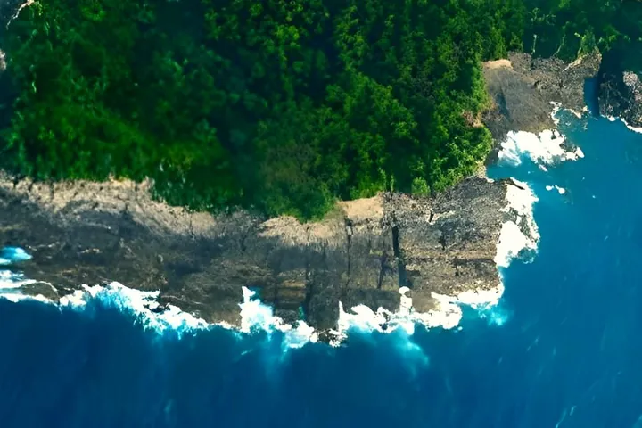
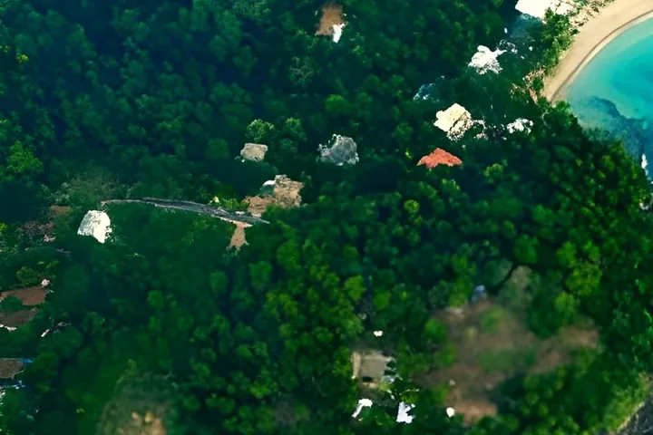
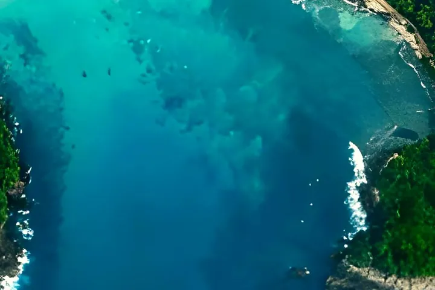
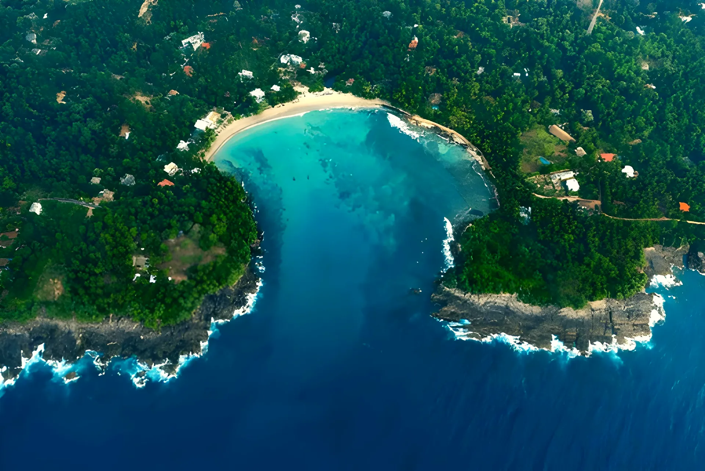
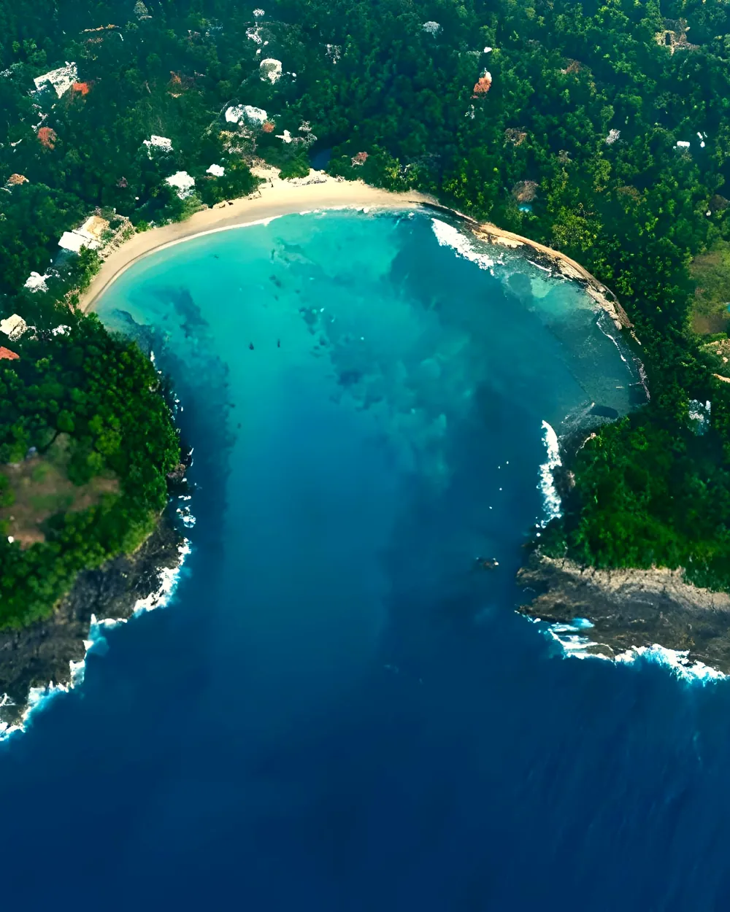

Surf & Experiences
Surf lessons
Learn on the bay with local instructors. Approved schools will list price, duration and inclusions.
Browse surf schools


Discover the rhythm of Sri Lanka’s southern coast. Surf the bay, find your perfect stay, explore local experiences, and connect with the people who make Hiriketiya unforgettable.


HIRIKETIYO is a local travel service in Hiriketiya, Dickwella. We bring rides, rooms, food, fitness, surf and coastal experiences together in one place, so you can plan your whole trip with people who live here.
Plan your trip
HIRIKETIYO is a local guide and booking platform for Hiriketiya, the curved bay on Sri Lanka’s southern coast. We bring surf lessons, places to stay, food and drink, tuk-tuk transfers, local experiences and shop products together in one place, with the people who live and work here.
We review every surf school, guesthouse, café, driver and shop before it is listed, so you can choose with confidence. Our aim is simple: to look after every guest and give Hiriketiya the warm welcome it is known for.
Read the guidePick a service to jump straight to it. Prices and booking options appear once a partner is approved.

Learn on the bay with local instructors. Approved schools will list price, duration and inclusions.
Browse surf schools
Rooms and villas by the bay, listed by local hosts once inventory is connected.
Browse stays
Cafés and kitchens along the shore, with opening hours supplied by each business.
Browse food & drink
Coastal tuk-tuk trips and transfers. Fares are confirmed by the provider after you ask.
Request a quote
Explore the coast with the people who live and work here.
See experiences
Take a piece of Ceylon with you. Products arrive with real photos and LKR prices.
Visit the shopPhotos are illustrative until partners are approved and supply their own.
Respect the ocean and its currents, book with local businesses, and take your waste with you. Verified ocean-safety guidance will be added to the destination guide before launch.
Commercial disclosure: Customers pay a 2% service fee and partners pay an 8% commission on paid bookings. Paid placements will be labelled.
Discover More. Experience Everything.
From ocean adventures to authentic local experiences, discover the best things to do in Hiriketiya. Connect with local experts, explore new experiences and make every moment unforgettable.
Experiences, activities and rentals from local providers. Only services with approved providers are listed. Food and stays are in Stay & Eat, transport is in Transport, products are in Shop.
Experiences from approved local partners will appear here as they join.
BECOME A DO HIRIKETIYO PARTNERJoin DO HIRIKETIYO and reach travellers who are already here.
BECOME A DO HIRIKETIYO PARTNER
Where tropical beauty meets coastal culture. A little bay with a world of experiences.
Hiriketiya is one of Sri Lanka’s most captivating coastal destinations, a hidden tropical paradise where golden sands, turquoise waters, lush green surroundings, and a relaxed island lifestyle come together. Tucked away along the southern coastline near Dikwella in the Matara District, Hiriketiya has become a favourite destination for travellers seeking more than just a beautiful beach. It is a place to slow down, connect with nature, discover local culture, enjoy ocean adventures, and experience the authentic rhythm of southern Sri Lanka.
Often affectionately known as Hiri, this small coastal destination offers a unique atmosphere that feels both peaceful and full of life. Whether you are a passionate surfer, a nature lover, a curious traveller, or someone looking for a quiet escape beside the ocean, Hiriketiya invites you to discover a different side of tropical Sri Lanka.

The first thing that captures your attention in Hiriketiya is its remarkable natural beauty. The coastline curves into a beautiful horseshoe-shaped bay, surrounded by tropical greenery and palm-covered hills. The sheltered shape of the bay creates a distinctive coastal landscape, making it one of the most visually memorable beaches in southern Sri Lanka.
Soft golden sand stretches along the shoreline, while clear blue and turquoise waters change colour throughout the day depending on the sunlight. Tall coconut palms frame the beach, creating a picture-perfect tropical setting.
Unlike some of Sri Lanka’s more expansive beaches, Hiriketiya has an intimate atmosphere. Its compact coastline makes it easy to explore, meet people, and enjoy the ocean from different viewpoints. Early mornings bring a peaceful atmosphere, while afternoons become lively with beachgoers, surfers, and travellers enjoying the sunshine.
As the sun begins to set, the bay takes on a different character. Warm golden light reflects across the water, the sky changes into beautiful shades of orange and pink, and the surrounding landscape becomes a peaceful backdrop for an unforgettable evening.
Surfing is an important part of Hiriketiya’s identity. Its crescent-shaped bay is known for its surf breaks, attracting beginners, intermediate surfers, and experienced wave riders from around the world.
One of the reasons Hiriketiya is popular among beginners is its beach-break area, where surf schools and instructors help newcomers learn the basics of surfing. For more experienced surfers, the bay also offers a reef break that can provide more challenging waves depending on ocean conditions.
The surfing experience here is about more than catching waves. It is about waking up early, carrying a surfboard towards the ocean, watching the morning light appear over the water, and sharing the excitement of the waves with fellow surfers.
Surf culture has also helped shape the character of the destination. Surf shops, board rentals, cafés, and friendly instructors contribute to an atmosphere where visitors can easily become part of the coastal community.
Check before you paddle out. Surf conditions change with seasons, tides, and weather, so checking local advice before entering the water is always important.
Hiriketiya is not just a beach destination; it is a place where different cultures, lifestyles, and travel experiences meet.
The local lifestyle is deeply connected to the ocean. Fishing, coastal traditions, small businesses, and everyday village activities remain part of the area’s character. At the same time, the arrival of international travellers has introduced a vibrant mix of creative cafés, boutique accommodation, wellness spaces, and independent businesses.
Walking through the surrounding streets, you will discover small restaurants, tropical cafés, surf shops, and welcoming spaces where visitors can relax and enjoy the atmosphere. Many places combine local ingredients and Sri Lankan hospitality with international food and contemporary café culture.
Despite its growing popularity, Hiriketiya still offers opportunities to experience the slower rhythm of coastal village life. Take a walk beyond the beach, observe the local surroundings, enjoy a conversation with a local resident, and discover the little details that make this destination special.
Food is an essential part of discovering Hiriketiya. The area offers an interesting combination of traditional Sri Lankan flavours and international dining experiences.
A traditional Sri Lankan rice and curry meal is a wonderful way to experience the island’s food culture. Rice is served with a variety of vegetable curries, dhal, sambols, and sometimes freshly prepared seafood. Each dish brings its own combination of spices, textures, and flavours.
Being close to the ocean, Hiriketiya is also a great place to enjoy seafood. Fresh fish, prawns, and other seafood dishes are popular choices throughout the southern coastal region.
For visitors who prefer lighter meals, the area also has cafés serving tropical fruit bowls, fresh juices, smoothies, coffee, breakfast plates, and vegetarian options.
Food in Hiriketiya is not simply about satisfying hunger. It is an opportunity to experience the creativity of the local hospitality scene while appreciating the ingredients and culinary traditions of Sri Lanka.
The natural beauty of Hiriketiya extends beyond its beautiful shoreline. The surrounding landscape includes tropical vegetation, coconut trees, coastal greenery, and small roads that lead through the peaceful neighbourhood.
Nature lovers can enjoy simple experiences such as walking along the coastline, watching local birds, observing the changing tides, and discovering the relationship between the village and the surrounding environment.
The ocean itself is an important part of the local ecosystem. Coastal habitats support marine life and provide a natural environment that deserves care and protection.
Visitors can help preserve the destination by avoiding littering, reducing single-use plastics, respecting wildlife, and choosing responsible tourism experiences.
The best way to appreciate Hiriketiya’s natural environment is to explore it thoughtfully, without disturbing the peaceful character that makes the area so special.
A journey through Hiriketiya also offers an opportunity to discover the cultural identity of southern Sri Lanka.
The wider Dikwella region has a rich connection to Buddhist traditions, village life, fishing communities, and generations of coastal heritage.
One notable cultural attraction nearby is Wewurukannala Vihara, famous for its monumental Buddha statue and distinctive temple architecture. It provides visitors with an opportunity to explore Sri Lanka’s religious traditions and artistic heritage.
Beyond temples and landmarks, local culture can be experienced through everyday interactions. Traditional food, village markets, local crafts, fishing activities, and the warmth of Sri Lankan hospitality all contribute to the character of this region.
Travelling respectfully and taking an interest in local traditions can make your experience much more meaningful.
One of the most beautiful things about Hiriketiya is the opportunity to slow down.
In a world where travelling often becomes a list of destinations and activities, Hiriketiya encourages a different approach. You do not always need a plan. Sometimes the best experiences come from enjoying a quiet morning, reading a book beside the ocean, taking a refreshing swim, or sitting in a café and watching the world go by.
Yoga, wellness activities, beach walks, and relaxed afternoons are all part of the destination’s appeal.
As evening approaches, the beach becomes a gathering place where travellers and locals enjoy the coastal atmosphere. Conversations, music, food, and the sound of the waves create a distinctive tropical experience.
Hiriketiya reminds visitors that a memorable holiday is not always about doing more. Sometimes it is about appreciating the moment.
Hiriketiya is also an excellent starting point for discovering other beautiful destinations along Sri Lanka’s southern coastline. A short journey can take you from peaceful beaches to cultural landmarks and fascinating natural attractions.
Nilwella
A small rocky islet just off the Nilwella shoreline, close to the bay and easy to reach on a short walk. It is a lovely place for quiet sea views and sunset light. Check the tide before you walk out, and take care on wet rock.
Kudawella
The only known blowhole in Sri Lanka. Seawater surges through a hidden sea cave and shoots high into the air with a deep “hoo” sound. It is most dramatic when the sea is strong, so keep behind the safety barriers.
Dondra, Matara
Stand at Dondra Head, the southernmost point of Sri Lanka, beside the country’s tallest lighthouse. The coastal drive passes fishing villages and palm-lined beaches, so it works well as a half-day outing.
Bathigama
A quiet stretch of coast at Bathigama where sea turtles are sometimes seen in the shallows. Sightings are never guaranteed. If you do see one, keep your distance and never touch or feed it.
Mulkirigala
Often called “Little Sigiriya”, this Buddhist temple complex sits on a 205 metre rock. Hundreds of steps lead past cave shrines with old murals and statues to wide views over the coconut groves. Go early, and dress modestly.
Tangalle
A long, wild beach where five species of sea turtle come ashore to nest. Guided night walks are run by the local turtle conservation project. Follow your guide, use no flash and keep your distance.
Tangalle
A long, calm stretch of sand with a much quieter feel than the main surf beaches. A good choice for an unhurried walk, a swim when the sea is gentle, or an easy sunset.
Tangalle
A small, palm-lined cove tucked away near Goyambokka, with soft sand, clear water and only a few beach cafés. It lives up to its name, and it is one of the most peaceful spots between Dikwella and Tangalle.
Distances and drive times are approximate, measured by road from Hiriketiya Beach. Traffic and road conditions change them.
Need a ride? Request a tuk-tuk quote
Hiriketiya can be visited throughout the year, but weather and ocean conditions influence the experience.
Drier months, popular with international visitors and surfers Changing weather, still beautiful
The southern coast generally experiences more favourable beach and surfing conditions during the drier months, particularly around December to April. This period is popular with international visitors and surfers.
Other months can bring changing weather, rainfall, and different ocean conditions. However, the tropical landscape remains beautiful, and visitors can still enjoy the local cafés, culture, and surrounding attractions.
Conditions depend on the season, tide, swell, and wind. It is always worth checking with local surf instructors before planning a session.
As Hiriketiya continues to attract travellers from around the world, protecting its natural beauty and local identity becomes increasingly important. Responsible tourism helps ensure that future generations can enjoy the same beautiful coastline and welcoming community. A few simple actions can make a difference:
Hiriketiya is more than a holiday destination. It is also a home, a community, and a natural environment that deserves protection.
There is something special about Hiriketiya that is difficult to describe in words. It is a destination where nature, culture, adventure, and community come together to create an experience worth remembering. From the first morning wave to the last golden sunset, every moment brings a new reason to appreciate this beautiful corner of Sri Lanka.
Hiriketiya – A little bay with a world of experiences.
Discover the lifestyle, culture and moments of Hiriketiya.
Early surf, slow cafés and golden sunsets.
Six ways to spend a day on this coast.
Surf, swim and paddle the bay.
Yoga, training and slow mornings.
Fresh seafood, rice and curry, tropical fruit.
Explore the coast beyond the bay.
Sunset gatherings, music and late tables.
Local crafts, art and creative spaces.
Southern Sri Lanka is a short ride away. Beaches, landmarks and a few quiet secrets.
Boats at dawn, rice and curry at noon.
Build your days, then send the plan.
Choose a room, add meals, gym or yoga, surf and places to visit, then pick how you travel between each stop. You can change any ride yourself, at any time.
Prices, availability and pick-up times are confirmed by each provider after you send your plan.
No approved providers yet. Approved surf schools and experiences will show price, duration, inclusions and cancellation terms.
Find your place. Taste the coast.
No properties listed yet. Availability shows only once inventory is connected.
No venues listed yet. Opening hours will come from the businesses.
Customers pay a 2% service fee on top of the listed price. Partners pay an 8% commission on paid bookings. Commission is never charged twice on one booking.
Explore more. Travel with ease.
Fares are confirmed by the provider after you send a request. There is no live tracking or instant dispatch.
Take a piece of Ceylon with you.
Products will be added with real photos, LKR prices and stock. Checkout stays off until payments are set up and tested.
Everything you need in Hiriketiya, from surf lessons to airport transfers.
Learn, ride and explore the bay.
Move between the bay, the airport and the coast.
Move, unwind and eat well.
See the south with the people who live here.
Prices, availability and pick-up times are confirmed by each provider. Approved partners will appear here as they join.